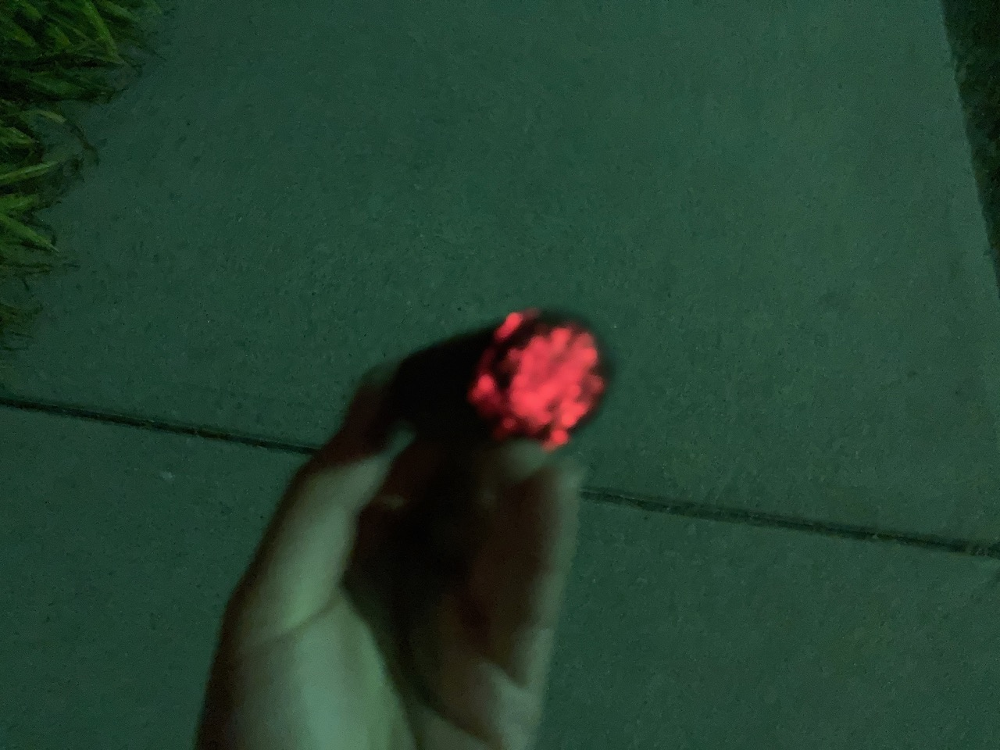
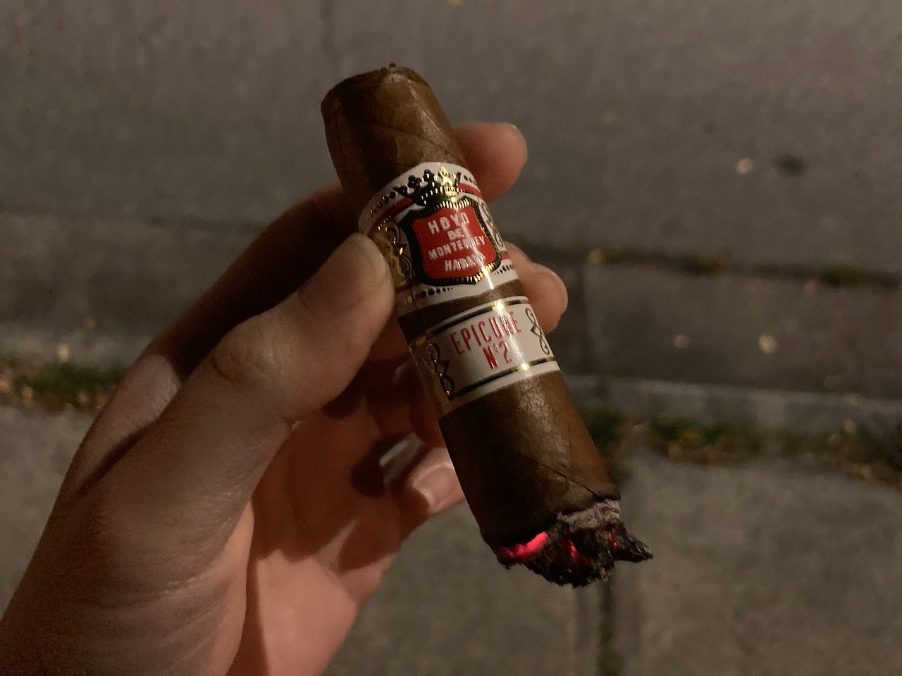

Cigar Review: Hoyo de Monterrey - Epicure No. 2
This is the cigar that was recommended to me by many people. Whenever I brought up the statement that I like H. Upmann cigars, the salespeople always recommend Hoyo de Monterrey Epicure No. 2. It is also quite loved by many YouTubers, but is it really that good? Let's find out!
The construction of the cigar looks pretty good. It is well packed and feels good in hands. I also have this one sitting in my humidor/storage box for quite some time before I enjoy this. It did not cause too much mess from the cut, but it's not as clean as Trinidad Reyes.
The flavour started out pretty smooth. It was sweet, has a hint of cocoa and was definitely fruity. Lighting it up was a great pleasure. It's always difficult to capture the good cherry with my cheap phone camera in low lighting, but I've tried.

It did not have a great deal of smoke output at the start, but it did got more as I progress. Midway through the cigar, the taste started to go south. It had a weird sour nutty taste to it. I can't quite describe it, but it started after the long ash fell off. It could be that I am overheating the cigar again. 😦
The draw was good and the burn was pretty straight. I did not have much issue and it didn't grow too crooked. I was having this one on a walk, but not an extremely windy day. The burn line stayed consistent throughout and I don't have much complain.

Unfortunately though, the sour taste stay pretty much till the end for me. It also turn into extremely bitter taste that was just so unpleasant. It does remind me of what I tasted before of Rio Seco. Maybe it is a signature taste that Hoyo de Monterrey features. I did not enjoy it as much.

Coming to the end of the cigar, I ended it earlier as usual as it didn't give me the flavour that I like and I was pretty much near the end anyways. The smoke time for this one was surprisingly about 45 min for me. I thought it would last me longer. 😅

Anyways, I personally still like the flavours that H. Upmann offers more. Epicure No.2 is not bad, but I did not enjoy the flavour as much. I did enjoy my walk around the neighbourhood though. It was a lovely evening at a fancy townhouse area. That's all I have for you today. Thanks for reading and I'll see you next time!